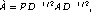
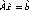
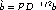

Examples in second subsection of the second section
Example
A simple example involving math.
Simple math a + b
Less simple (braces) { a + b }
And with ldots Foo( a + b + ... )
Even worse, with subscripts and superscripts A1 + B2 = Cold
Here is a block of text that caused some problems (overwrites in the math handling):
When manipulating a preconditioning matrix, A , BlockSolve95 internally works with a scaled and permuted matrix,  where D is the diagonal of A , and P is a permutation matrix determined by a graph coloring for efficient parallel computation. Thus, when solving a linear system, Ax=b, using ILU/ICC preconditioning and the matrix format MATMPIROWBS for both the linear system matrix and the preconditioning matrix, one actually solves the scaled and permuted system  , where and  .